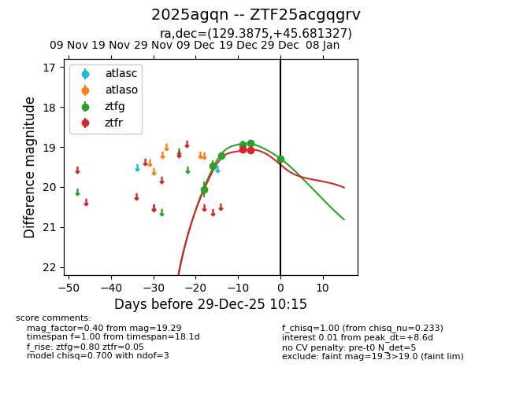
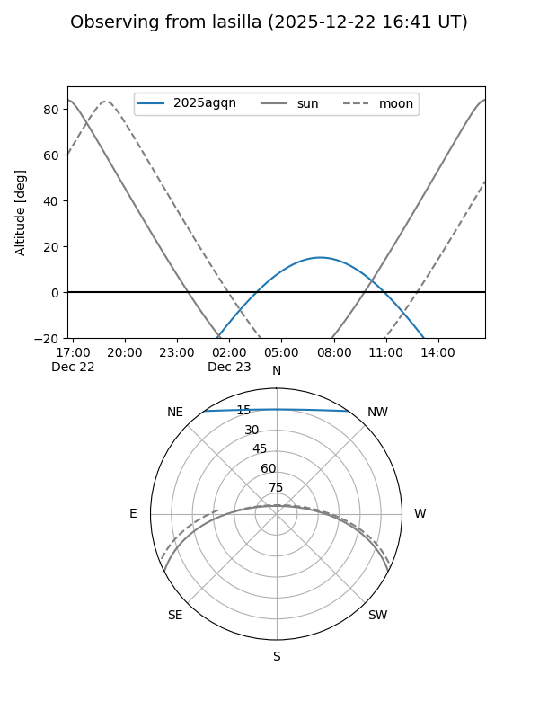
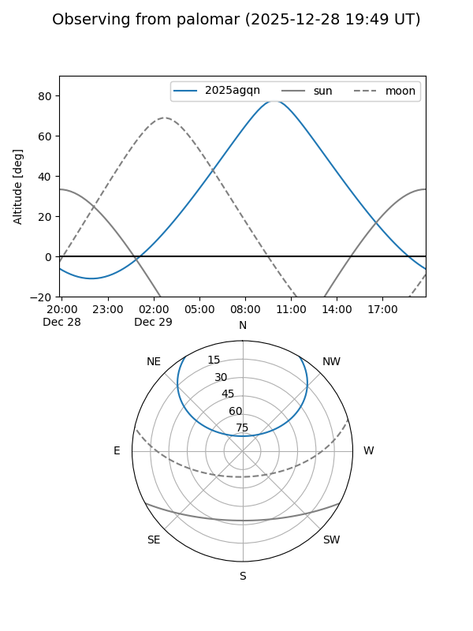
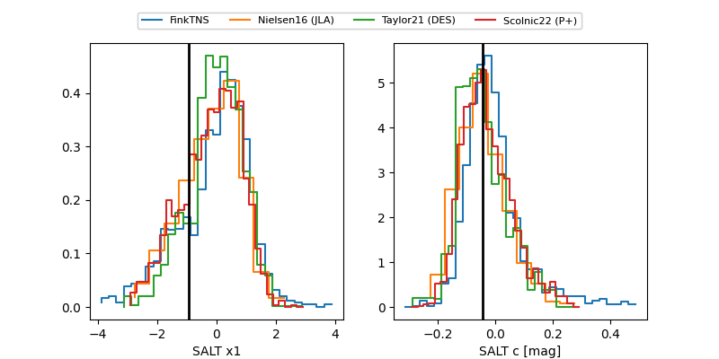

2025agqn
Target 2025agqn at 2025-12-20 12:19
Aliases and brokers:
FINK: fink-portal.org/ZTF25acgqgrv
Lasair: lasair-ztf.lsst.ac.uk/objects/ZTF25acgqgrv
ALeRCE: alerce.online/object/ZTF25acgqgrv
TNS: wis-tns.org/object/2025agqn
YSE: ziggy.ucolick.org/yse/transient_detail/2025agqn
alt names
ZTF25acgqgrv (ztf,fink_ztf)
2025agqn (tns,yse)
Coordinates:
equatorial (ra, dec) = 129.3875,+45.68133
equatorial (HMS+DMS) = 08:37:32.99,+45:40:52.78
galactic (l, b) = (174.5867,+37.15354)
Flags:
confirmed ia
likely cv
Photometry:
last ztfg=19.21, ztfr=19.06
3 ztfg, 1 ztfr detections
Lightcurve

Visibility


Additional plots
